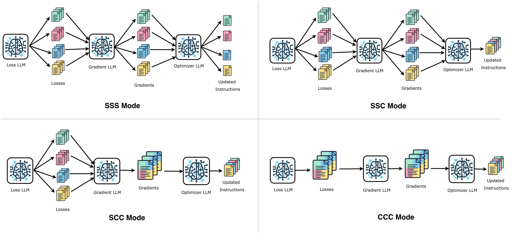
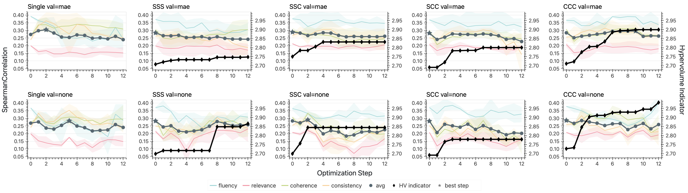
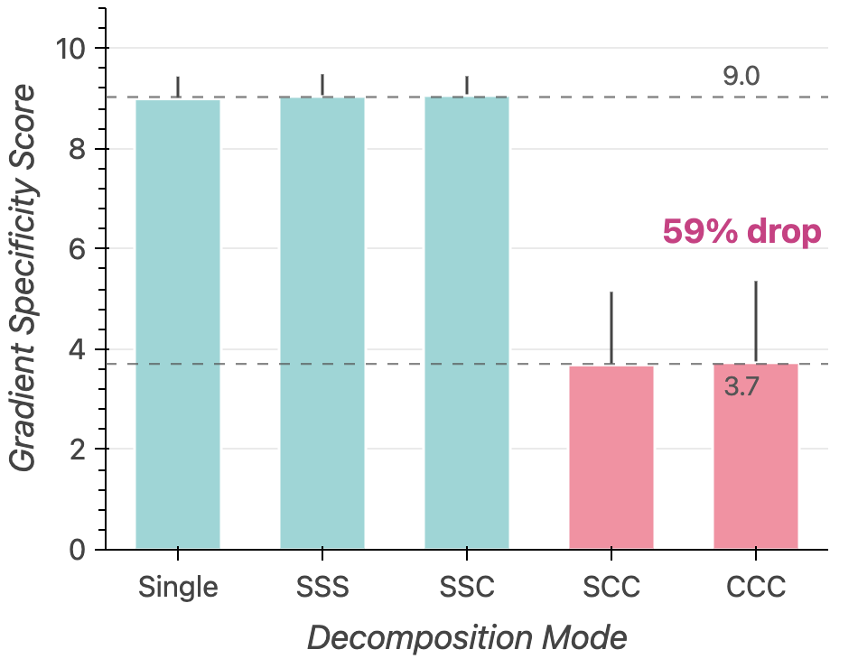
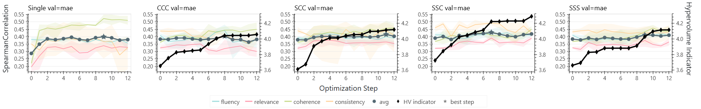

Abstract
Customizing an LLM judge to a specific problem or domain often involves optimizing its prompt across multiple evaluation criteria simultaneously. Textual gradient methods automate this for a single judge criterion, however they produce natural-language critiques, not numerical vectors. Thus, the conflict-resolution toolkit of multi-task learning (PCGrad, MGDA) does not apply to this multi-objective textual gradient setting. We extend TextGrad to the multi-objective setting and test four decomposition modes of textual gradient optimizers by varying how much cross-objective information the loss, gradient and optimizer LLMs share. We find the gradient's task-focus drops by 59% (9.0 to 3.7 out of 10) when the gradient LLM must provide feedback on multiple criteria jointly. Separately, we observe that naively combining single-objective optimized instructions into a single prompt degrades Spearman ρ from 0.305 to 0.220 (−0.085). These results identify two separable failure modes: optimization-time gradient dilution and inference-time instruction interference, which together constrain the design space for multi-objective judge optimization using textual feedback.

Overview of the optimization pipeline with four decomposition modes (SSS, SSC, SCC, CCC).

Per-task Spearman ρ trajectories showing stagnation in multi-task modes.

Gradient specificity drops 59% when gradient LLM processes all tasks jointly.

DeepSeek results confirm the same failure modes persist across model families.
BibTeX
@inproceedings{darshan2026whengradientscollide,
title={When Gradients Collide: Failure Modes of Multi-Objective Prompt Optimization for LLM Judges},
author={Darshan, Parth and Divekar, Abhishek},
booktitle={Proceedings of the 64th Annual Meeting of the Association for Computational Linguistics (ACL 2026)},
year={2026},
url={https://textgrad-failure-modes.github.io}
}